Litmatch — Sơ đồ kiến trúc và luồng xử lý
21 nhóm sản phẩm · 25 mục sơ đồ · 50 ảnh
Luồng ghi rõ thành phần xử lý và số bước ở đầu mỗi ô; dây ghi giao tiếp hoặc điều kiện. Matching Engine và các mục Profile/Privacy, Analytics, Realtime bổ sung cách đọc xuyên các thành phần.
10 triệu đồng thời
Bản riêng cho bài toán 10 triệu đồng thời: kiến trúc 10M (một sơ đồ tổng quan và tám sơ đồ chi tiết) và code thật của các luồng khó đã đổi (31 trang; mỗi trang ghi rõ code đã đẩy lên PR #84 hay còn là thay đổi local chưa commit). Hệ thống chưa được chứng nhận 10 triệu đồng thời.
Kiến trúc bản đầu (v2)
Bản v2 của 25 sơ đồ kiến trúc ở trang này, vẽ theo kiểu bản 10 triệu đồng thời (thêm module, thực thể, dịch vụ ngoài, job nền): architecture-v2. Chỉ có sơ đồ kiến trúc, không có luồng xử lý.
Mới: 10 triệu đồng thời v3 — kiến trúc và code gộp chung, lấy từ code đã commit (49b80ba). Hai bản 10M cũ ở trên giữ nguyên.
Đối chiếu đủ 21 nhóm sản phẩm
| # | Nhóm sản phẩm | Sơ đồ |
|---|---|---|
| 1 | Soul Match | Matching Engine · Soul Match |
| 2 | Voice Match | Matching Engine · Voice Match |
| 3 | Party Room | Party Room |
| 4 | Movie Match / Movie Night | Movie Match / Movie Night |
| 5 | Palm Match | Palm Match |
| 6 | Feed và Stories | Feed và Stories |
| 7 | Avatar tùy chỉnh | Avatar tùy chỉnh |
| 8 | Diamond, top-up và VIP | Diamond, Top-up và VIP |
| 9 | Matching speed-up | Matching Speed-up |
| 10 | Gift | Gift |
| 11 | Mini game | Mini Game |
| 12 | Trust & Safety | Trust & Safety |
| 13 | Preference khi matching | Preference khi Matching · User Profile và Privacy |
| 14 | Availability theo platform/runtime | Runtime Availability |
| 15 | Friend và chat 1-1 | Friend và Chat 1-1 · Realtime Fanout |
| 16 | Đăng ký, onboarding và guest | Đăng ký, Onboarding và Guest · User Profile và Privacy · Analytics và thông báo privacy |
| 17 | Discovery, Nearby và direct invite | Discovery, Nearby và Direct Invite · User Profile và Privacy |
| 18 | Mood và conversation streak | Mood và Conversation Streak |
| 19 | Short video | Short Video |
| 20 | Notification | Notification |
| 21 | Support và admin operations | Support và Admin Operations |
Đối chiếu 21 nhóm trong registry
| Registry ID | Sơ đồ |
|---|---|
| auth-session | Đăng ký, Onboarding và Guest |
| runtime-capabilities | Runtime Availability |
| economy-ledger | Diamond, Top-up và VIP |
| matching | Matching Engine · Matching Speed-up · Preference khi Matching · Discovery, Nearby và Direct Invite |
| soul-match | Soul Match |
| calling | Voice Match · Friend và Chat 1-1 |
| party-room | Party Room |
| gift | Gift |
| friend-chat-streak | Friend và Chat 1-1 · Mood và Conversation Streak |
| feed-stories | Feed và Stories |
| safety | Trust & Safety |
| avatar-discovery-mood | Avatar tùy chỉnh · Discovery, Nearby và Direct Invite · Mood và Conversation Streak |
| notification | Notification |
| support-tickets | Support và Admin Operations |
| mini-game | Mini Game |
| movie-match | Movie Match / Movie Night |
| palm-match | Palm Match |
| short-video | Short Video |
| user-profile-open-entry | User Profile và Privacy |
| privacy-analytics-consent | User Profile và Privacy · Analytics và thông báo privacy · Discovery, Nearby và Direct Invite |
| realtime-fanout | Realtime Fanout |
Matching Engine
Mỗi mục có 2 ảnh. Mở PNG hoặc SVG để xem toàn bộ ở độ phân giải gốc.
Sơ đồ kiến trúc
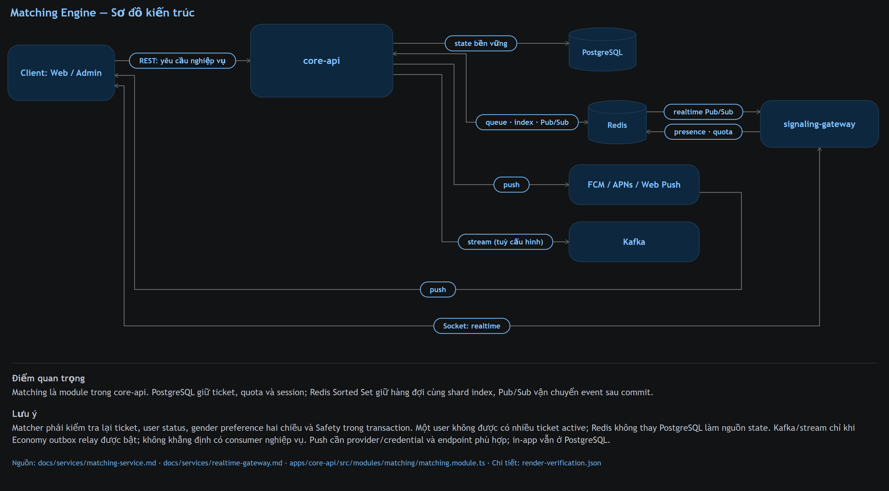


Soul Match
Mỗi mục có 2 ảnh. Mở PNG hoặc SVG để xem toàn bộ ở độ phân giải gốc.
Sơ đồ kiến trúc
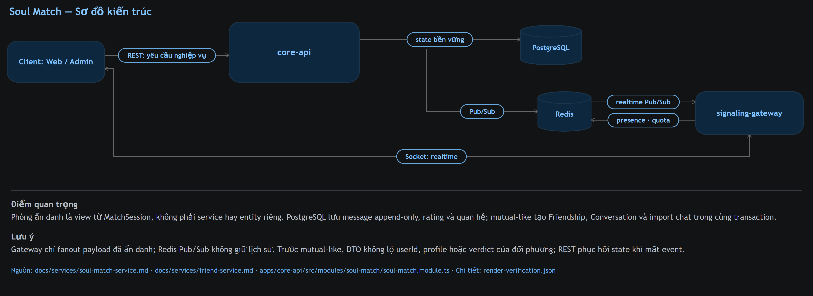


Voice Match
Mỗi mục có 2 ảnh. Mở PNG hoặc SVG để xem toàn bộ ở độ phân giải gốc.
Sơ đồ kiến trúc
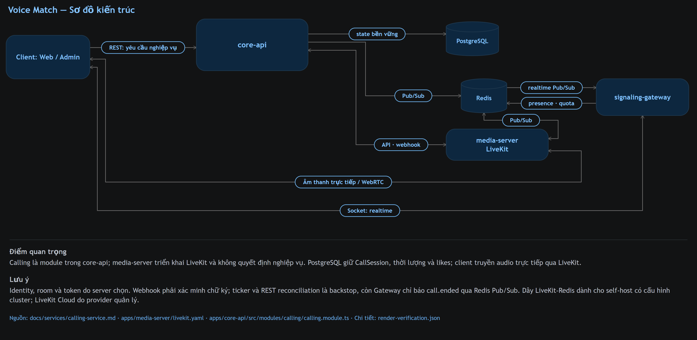


Party Room
Mỗi mục có 2 ảnh. Mở PNG hoặc SVG để xem toàn bộ ở độ phân giải gốc.
Sơ đồ kiến trúc
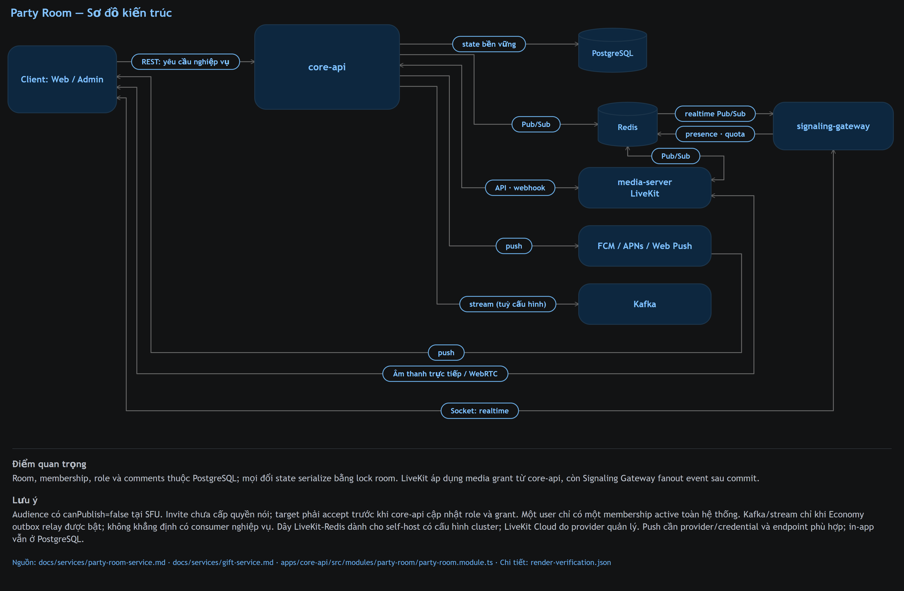


Movie Match / Movie Night
Mỗi mục có 2 ảnh. Mở PNG hoặc SVG để xem toàn bộ ở độ phân giải gốc.
Sơ đồ kiến trúc
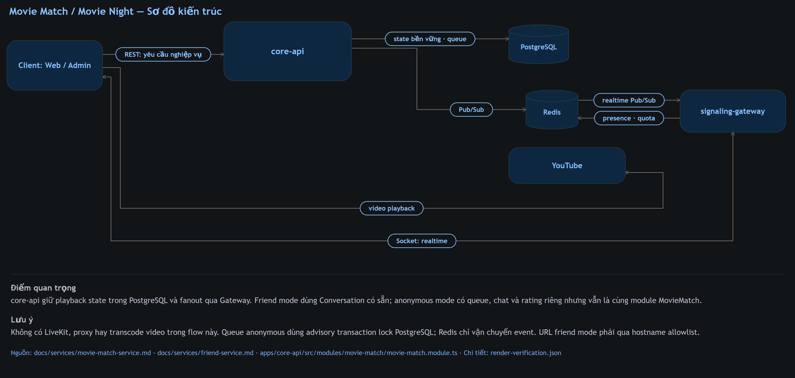


Palm Match
Mỗi mục có 2 ảnh. Mở PNG hoặc SVG để xem toàn bộ ở độ phân giải gốc.
Sơ đồ kiến trúc
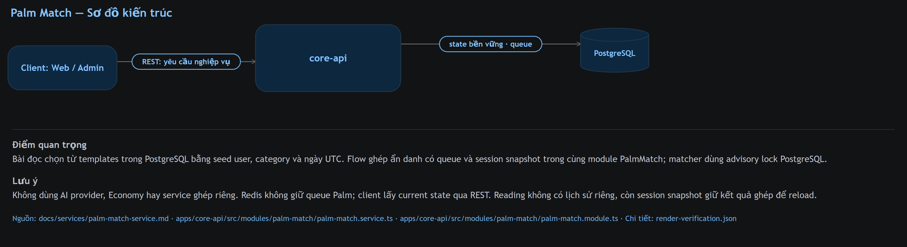


Feed và Stories
Mỗi mục có 2 ảnh. Mở PNG hoặc SVG để xem toàn bộ ở độ phân giải gốc.
Sơ đồ kiến trúc
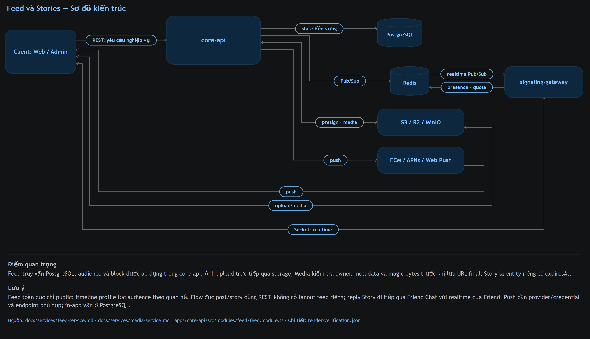


Avatar tùy chỉnh
Mỗi mục có 2 ảnh. Mở PNG hoặc SVG để xem toàn bộ ở độ phân giải gốc.
Sơ đồ kiến trúc
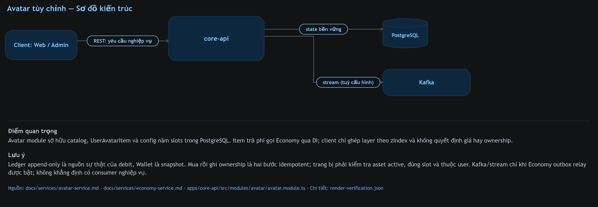


Diamond, Top-up và VIP
Mỗi mục có 2 ảnh. Mở PNG hoặc SVG để xem toàn bộ ở độ phân giải gốc.
Sơ đồ kiến trúc
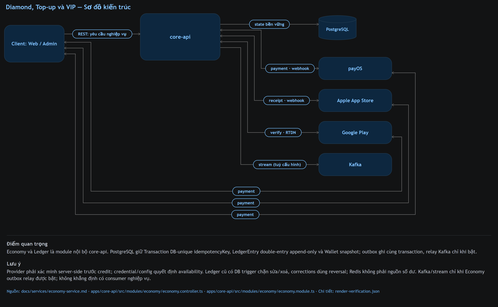


Matching Speed-up
Mỗi mục có 2 ảnh. Mở PNG hoặc SVG để xem toàn bộ ở độ phân giải gốc.
Sơ đồ kiến trúc
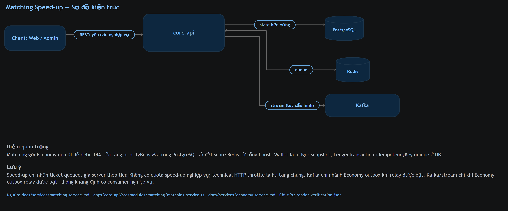


Gift
Mỗi mục có 2 ảnh. Mở PNG hoặc SVG để xem toàn bộ ở độ phân giải gốc.
Sơ đồ kiến trúc
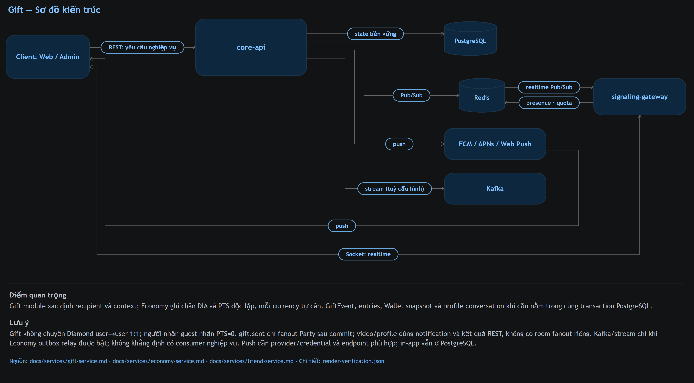


Mini Game
Mỗi mục có 2 ảnh. Mở PNG hoặc SVG để xem toàn bộ ở độ phân giải gốc.
Sơ đồ kiến trúc
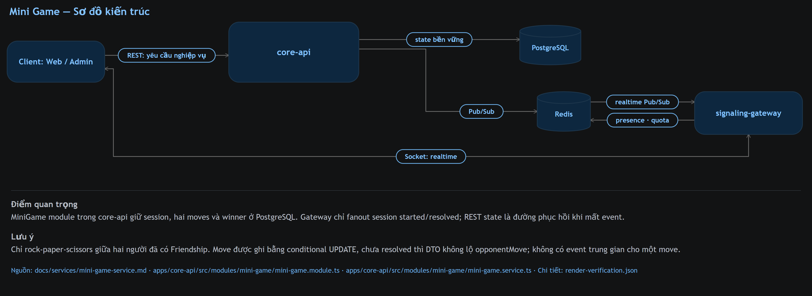


Trust & Safety
Mỗi mục có 2 ảnh. Mở PNG hoặc SVG để xem toàn bộ ở độ phân giải gốc.
Sơ đồ kiến trúc
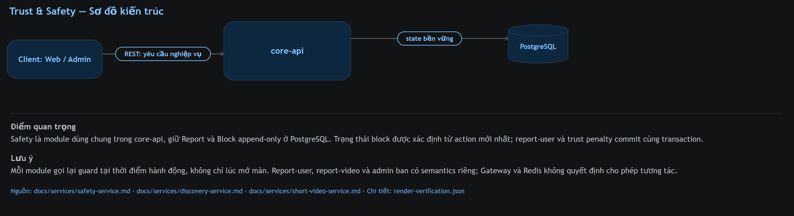


Preference khi Matching
Mỗi mục có 2 ảnh. Mở PNG hoặc SVG để xem toàn bộ ở độ phân giải gốc.
Sơ đồ kiến trúc
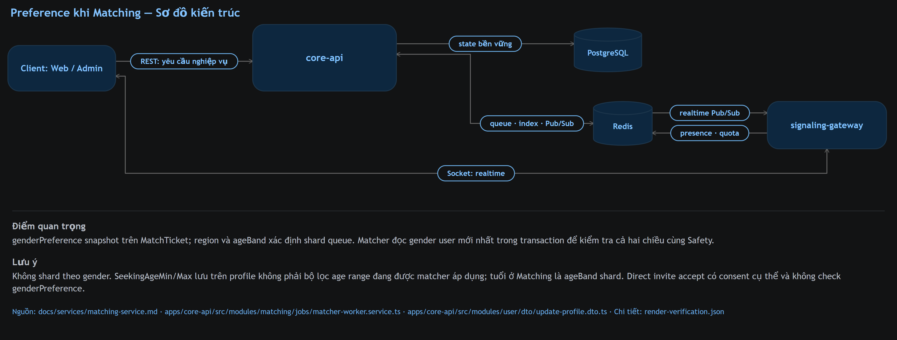


Runtime Availability
Mỗi mục có 2 ảnh. Mở PNG hoặc SVG để xem toàn bộ ở độ phân giải gốc.
Sơ đồ kiến trúc
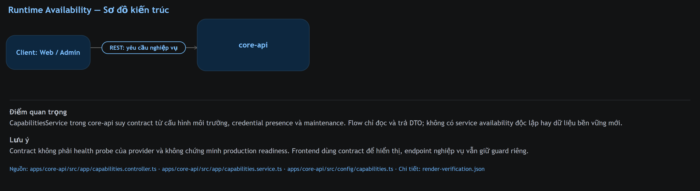


Friend và Chat 1-1
Mỗi mục có 2 ảnh. Mở PNG hoặc SVG để xem toàn bộ ở độ phân giải gốc.
Sơ đồ kiến trúc
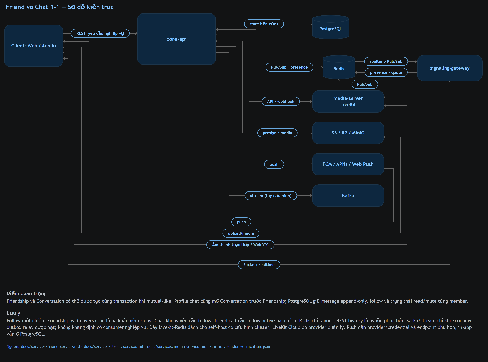


Đăng ký, Onboarding và Guest
Mỗi mục có 2 ảnh. Mở PNG hoặc SVG để xem toàn bộ ở độ phân giải gốc.
Sơ đồ kiến trúc
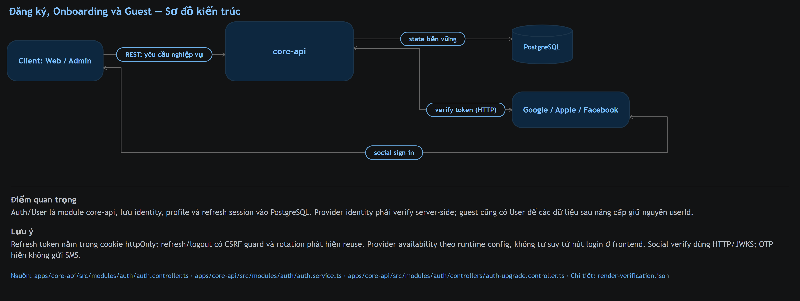


Discovery, Nearby và Direct Invite
Mỗi mục có 2 ảnh. Mở PNG hoặc SVG để xem toàn bộ ở độ phân giải gốc.
Sơ đồ kiến trúc
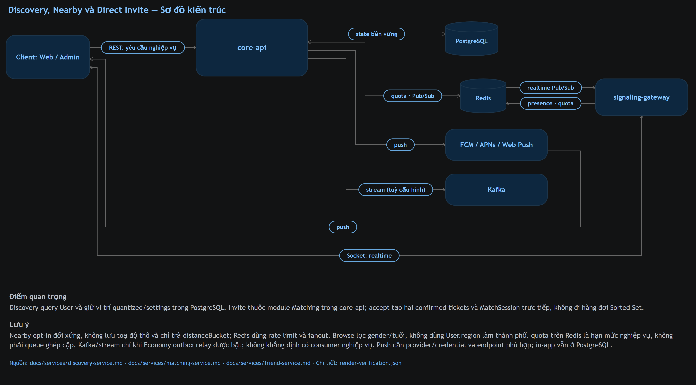


Mood và Conversation Streak
Mỗi mục có 2 ảnh. Mở PNG hoặc SVG để xem toàn bộ ở độ phân giải gốc.
Sơ đồ kiến trúc
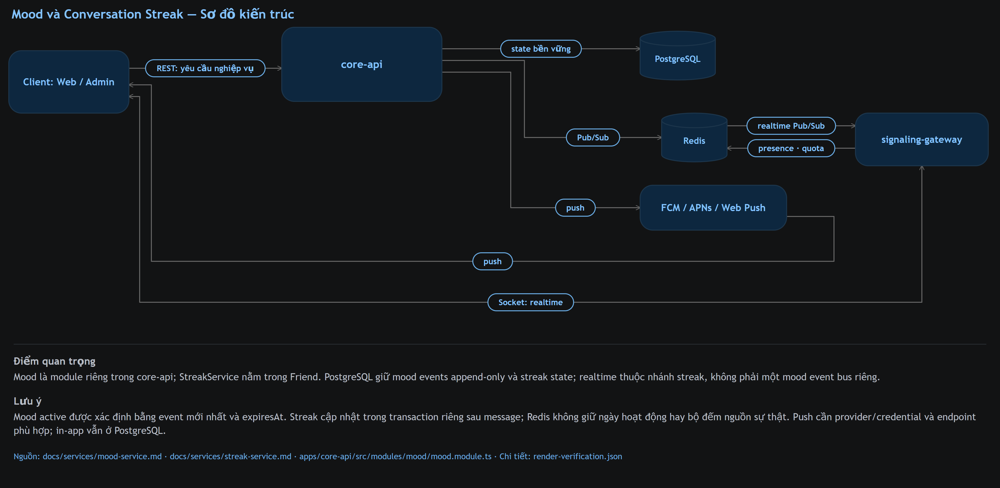


Short Video
Mỗi mục có 2 ảnh. Mở PNG hoặc SVG để xem toàn bộ ở độ phân giải gốc.
Sơ đồ kiến trúc
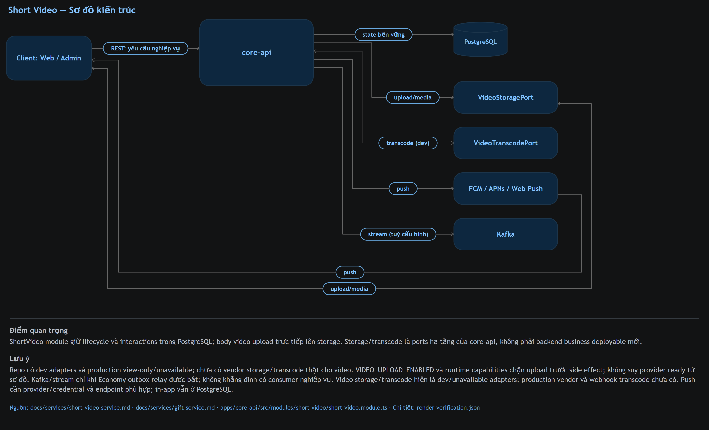


Notification
Mỗi mục có 2 ảnh. Mở PNG hoặc SVG để xem toàn bộ ở độ phân giải gốc.
Sơ đồ kiến trúc
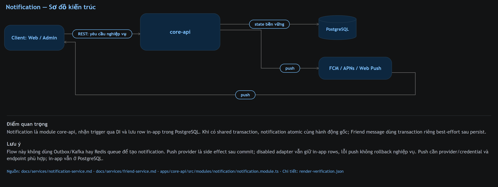


Support và Admin Operations
Mỗi mục có 2 ảnh. Mở PNG hoặc SVG để xem toàn bộ ở độ phân giải gốc.
Sơ đồ kiến trúc
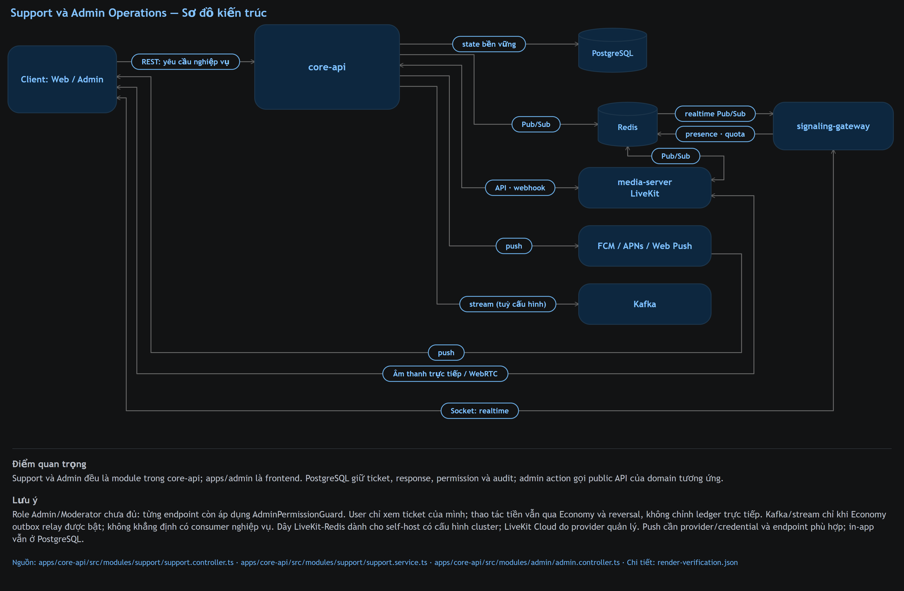


User Profile và Privacy
Mỗi mục có 2 ảnh. Mở PNG hoặc SVG để xem toàn bộ ở độ phân giải gốc.
Sơ đồ kiến trúc
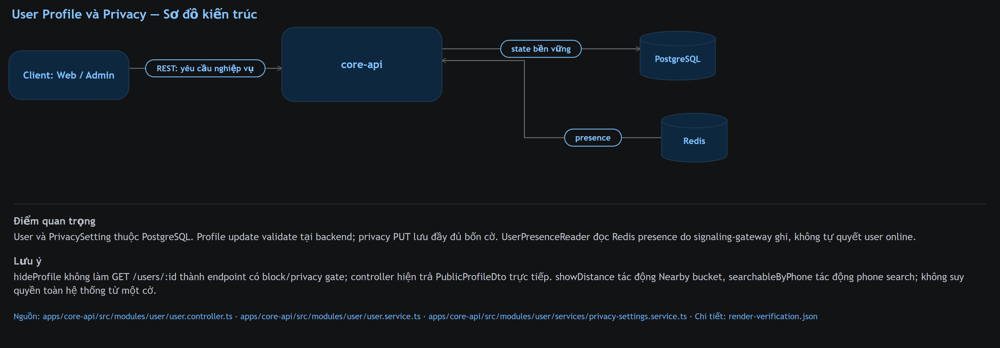


Analytics và thông báo privacy
Mỗi mục có 2 ảnh. Mở PNG hoặc SVG để xem toàn bộ ở độ phân giải gốc.
Sơ đồ kiến trúc
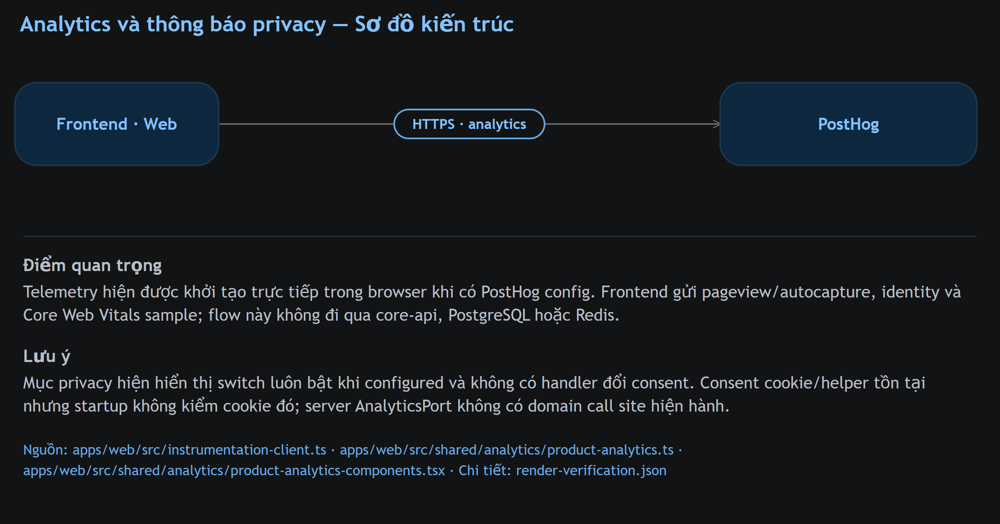


Realtime Fanout
Mỗi mục có 2 ảnh. Mở PNG hoặc SVG để xem toàn bộ ở độ phân giải gốc.
Sơ đồ kiến trúc
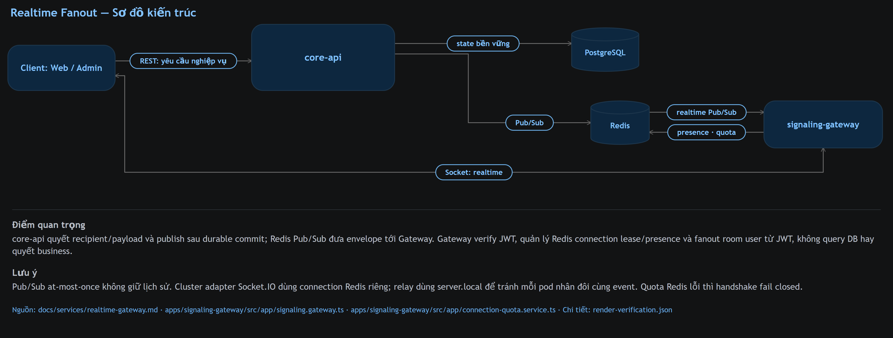


Mục còn deferred
Các mục này được giữ đúng trạng thái trong registry.
| Mục | Trạng thái | Ghi chú |
|---|---|---|
| production-cache-policy | deferred | Chưa có production hit-rate, latency hay eviction evidence để dựng cache/TTL policy mới. |
| algorithm-upgrades | deferred | Matching shard expansion, Feed CQRS và ranking nâng cấp chờ số liệu traffic/SLO thật. |
| short-video-reporting-ui | deferred | API/backend report còn hoạt động nhưng nút báo cáo đã bị gỡ khỏi reel UI hiện tại; không claim UI implemented. |